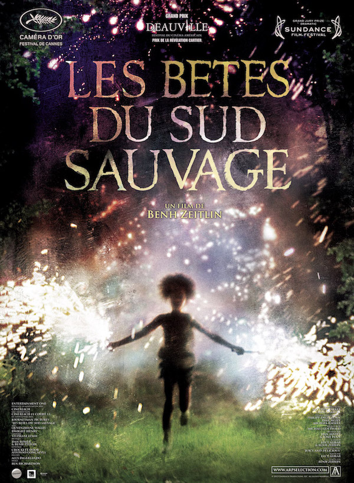

Nathan Huberty
Web developer
Graduated from Kedge Business School, I worked as a business developer and became a web developer thanks to Le Wagon. I created Ethictory as a helper for consumers which try to make the planet a better place.
Favorite movies

|
InterstellarA team of explorers travel through a wormhole in space in an attempt to ensure humanity's survival. |
|  |
Beasts of the Southern WildFaced with both her hot-tempered father's fading health and melting ice-caps that flood her ramshackle bayou community and unleash ancient aurochs, six-year-old Hushpuppy must learn the ways of courage and love. |

|
WatchmenIn 1985 where former superheroes exist, the murder of a colleague sends active vigilante Rorschach into his own sprawling investigation, uncovering something that could completely change the course of history as we know it. |